Mainshaft Reassembly
Mainshaft ReassemblyMainshaft:
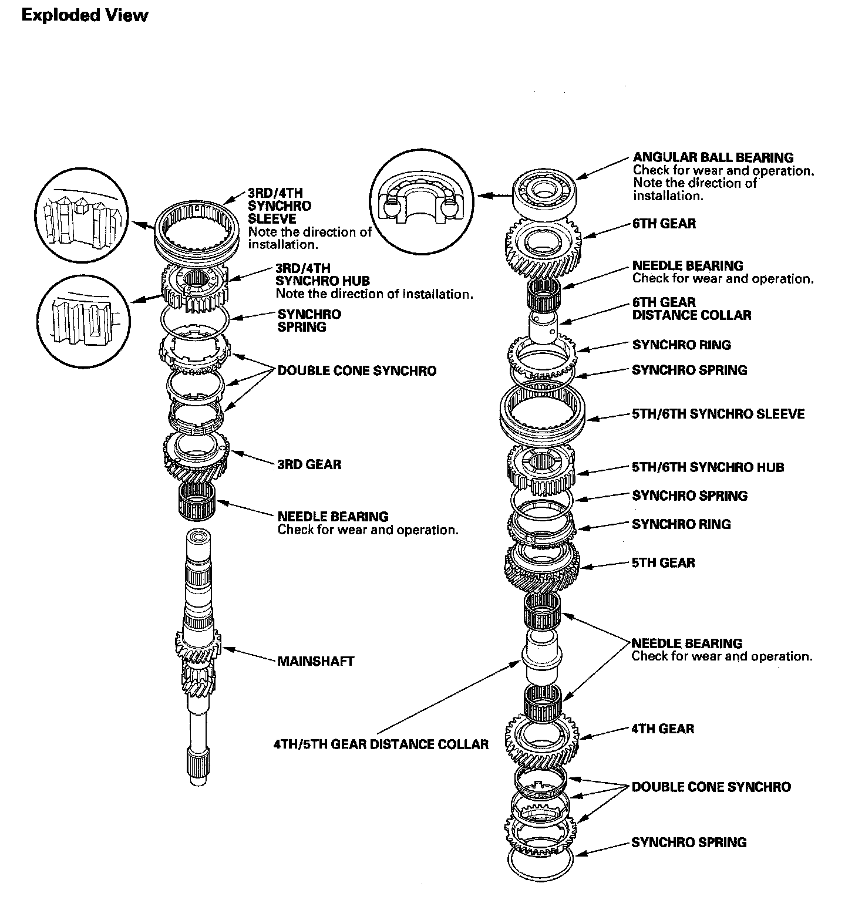
Special Tools Required
^ Driver handle, 40 mm I.D. 07746-0030100
^ Driver handle, 30 mm I.D. 07746-0030300
NOTE: Refer to the Exploded View, as needed, during this procedure.
1. Clean all the parts in solvent, dry them, and apply MTF to all contact surfaces except the 3rd/4th and 5th/6th synchro hubs.
2. Install the needle bearing and 3rd gear on the mainshaft.
3. Install the double cone synchro assembly (A) by aligning the synchro cone fingers (B) with the holes in 3rd gear (C), then install the synchro spring (D).
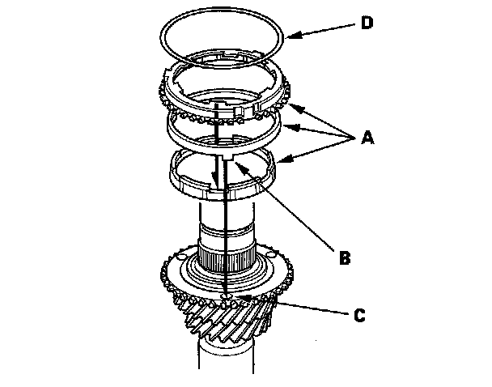
4. Install the 3rd/4th synchro hub (A) by aligning the synchro ring fingers (B) with the grooves in the 3rd/4th synchro hub (C).
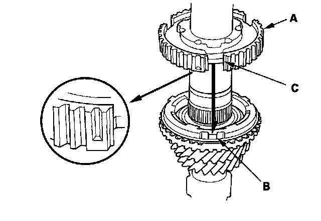
5. Install the 3rd/4th synchro hub (A) using the 40 mm I.D. driver (B).
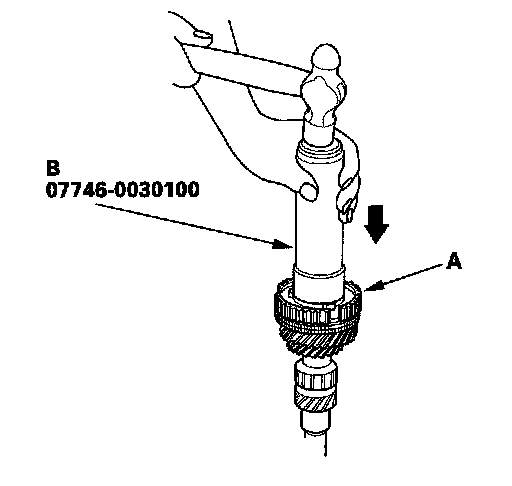
6. Install the 3rd/4th synchro sleeve (A) by aligning the stops (B) of the 3rd/4th synchro sleeve and 3rd/4th synchro hub. After installing, check the operation of the 3rd/4th synchro hub set.
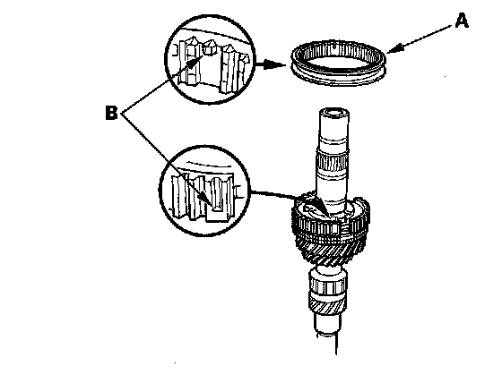
7. Install the synchro spring (A).
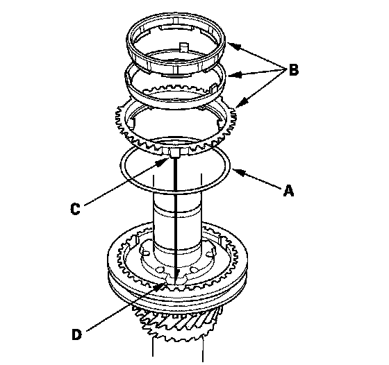
8. Install the double cone synchro assembly (B) by aligning the synchro ring fingers (C) with the grooves in the 3rd/4th synchro hub (D).
9. Install 4th gear (A) by aligning the synchro cone fingers (B) with the holes in 4th gear (C).
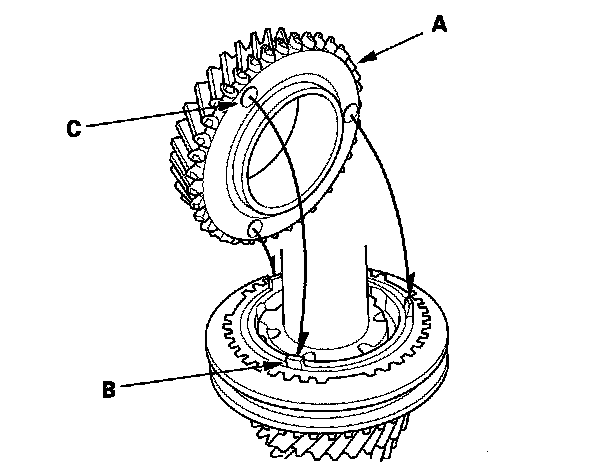
10. Install the needle bearings, 4th/5th gear distance collar, 5th gear, 5th gear synchro spring, and the synchro ring.
11. Install the 5th/6th synchro hub (A) by aligning the synchro ring fingers (B) with the grooves in the 5th/6th synchro hub (C).
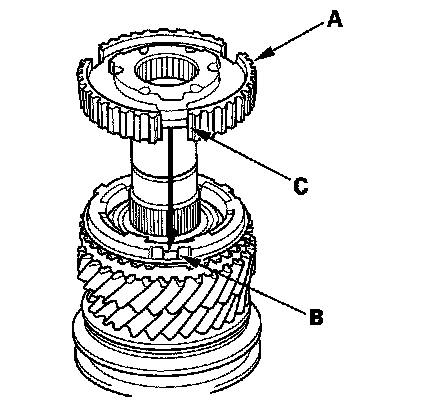
12. Install the 5th/6th synchro hub (A) using the 40 mm I.D. driver (B) and 30 mm I.D. attachment (C).
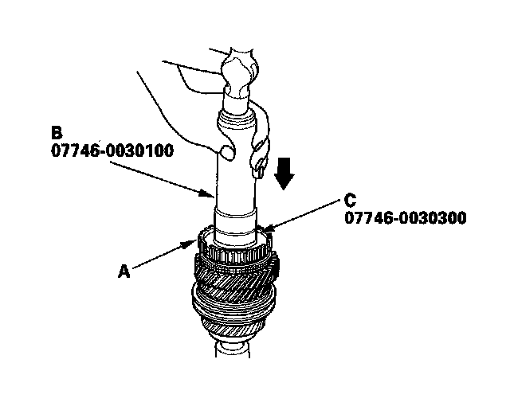
13. Install the 5th/6th synchro sleeve.
14. Install the synchro spring (A).
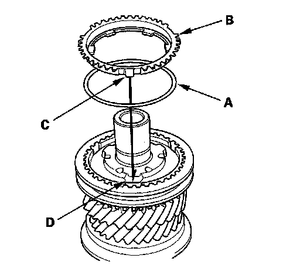
15. Install the synchro ring (B) by aligning the synchro ring fingers (C) with the grooves in the 5th/6th synchro hub (D).
16. Install the 6th gear distance collar, needle bearing, and 6th gear.
17. Install the new angular ball bearing (A) using the 40 mm I.D. driver (B), 30 mm I.D. attachment (C), and press (D).
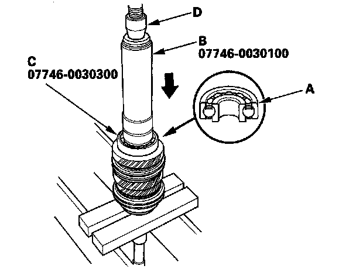